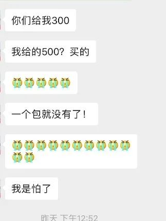

快递变慢递，最后卡在了小区门口
原文链接 备份链接 文 | 邢海洋 武汉有一位微博博主@八荒以后 的帖子引来了网友们的唏嘘。封城之下，物资一直稳定，没有供应不足，但因为近日小区改变了管理规则，每隔三天才能采购一次，很多人去囤积，她家的储备不足，一时饿了肚子。 博主@八荒 …

小区门口、公司门口、超市门口……人们已经习惯了被工作人员拿着额温枪测量体温这一动作。随着全国大部分地区复工复产的推进，额温枪这一原本小众的产品已经成为“硬通货”，一“枪”难求。
文 | 盛倩玉 编辑 | 小豆
（图源：文汇网）
345元、425元、455元、500元、521元……一支小小的额温枪，几天之内价格几经变化，令想购买200支额温枪，援助村镇防疫的一家湖北农业企业头痛不已。
但卖家同样深感无奈，厂家产能受限，市面上根本拿不到货，“自己发货还要贴钱”，要不是为了优先支援湖北，她宁愿不接这一单生意。
买家无奈：急购200支额温枪
新冠肺炎疫情的发生，让以往需求量稳定的口罩、酒精、消毒水等防疫物资，突然成了紧俏商品。而如今，随着企业陆续开展复工，生产生活逐步恢复，额温枪又成了最新的关注点。
检测人体体温的温度计，有接触式和非接触式两种。接触式的体温计测量准确度较高，但测量时间较长，在公共场合对于来往人群的体温检测，额温枪这种非接触式体温计往往更为快速、安全。

（图源：新华网）
现如今，在小区门口、公司大门、超市门口……随处可见工作人员拿着额温枪测量来往者的体温，这使得额温枪这一原本较为小众的产品，一时间出现供不应求的状况。不少急需购买额温枪以备复工复产的企业、单位，在药店和网络平台遍寻不得，只能通过熟人介绍、人肉代购等方式“求货”。
2月13日，湖北省随州市淅河镇当地的一家农业企业——湖北丰年农业开发有限公司（以下简称“丰年农业”）总经理徐道恒得知，淅河当地缺乏额温枪物资，于是先后打听了不少朋友，想为镇里购买捐助200支额温枪。
在随州企业家的微信群里，徐道恒通过中间人联系上了一家名为“深圳逐鹿文化旅游有限公司”（以下简称“逐鹿文化”）的深圳企业，可以帮助他们订购额温枪。
此时额温枪已经很难买了，能订到货绝对是个好消息。丰年农业的财务徐丽莎随后添加了逐鹿文化的负责人曾女士，表示想要订购200支额温枪。曾女士回复：“245元/支，200支共计49000元，不含税、不包邮。”
徐莉莎告诉记者，对方发送了产品信息图给她后，她从淘宝等平台检索了这一款“健之康医用红外额温计”，发现同款价格多在40-150元左右，但实际上都是没货的。此时额温枪紧缺，即使价格稍高也可以理解，徐丽莎立即通过银行转账的方式，将49000元汇往了逐鹿文化。

一个多小时后，徐丽莎突然收到对方发来的微信。曾女士抱歉地告诉徐丽莎，刚才太忙算错了价格，额温枪应该是345元/只。“我（进货）下单都是330元了。”曾女士提出，徐莉莎可以补齐差价，或者选择退款处理。
见对方态度诚恳，而本镇对于额温枪的需求确实迫切，在和公司总经理等人沟通后，14日早晨，徐莉莎又将20000元的差价汇往逐鹿文化的账户。
付完款后，丰年农业焦急地等待对方公司安排发货。15-18日的几天时间，丰年农业都在催促询问。19日上午，逐鹿文化则通过中间人“范总”告诉丰年农业总经理徐道恒，额温枪已经发货，“昨晚工人拿到顺丰点了”。徐道恒询问具体发货数量时，范总表示“先给安排90（支）。”

徐道恒询问剩下的110只什么时候可以安排发货，对方则表示“预计在25日内发完。”
几天时间，对一般物资或许并不算久，但对疫区则意义不同。淅河镇是随州最大一镇，感染情况每天都在变化，镇内56个村委都在焦急等待物资。丰年农业讨论后觉得，时间拖得太久了，剩余110只还是另找渠道。而中间人范总也爽快答应，会把110只额温枪的37950元退还给公司。
当天，逐鹿文化却经由范总将51750元（150支额温枪的钱）退到了丰年农业的账户上。财务徐莉莎考虑到，一定是逐鹿文化多退了钱，于是又通过银行将13800元（40支额温枪的钱）返还了逐鹿文化。
可是，直到20日曾女士将发货单号和发货内容转发给徐莉莎查验时，徐莉莎才明白过来，其实逐鹿文化发给他们的货物，并非90支，而是50支。
价格一天数变，节节攀升
“当时真的太忙了，都在找货，所以很乱。”对于告知发货数量与实际发货数量不符的问题，丰年农业方面觉得理解，特殊时期，大家相互支持，忙碌时发生差错也是难免。但随后发生的事，却令她越来越头疼。
20日午间，曾女士曾在微信里告诉过徐莉莎，发往淅河镇的这批货，自己下单订购都要500元/支了。“你们给的300，我（进货）给的500。”

而针对丰年农业误转的13800元，丰年农业方面则希望，逐鹿文化可以再发40支额温枪到淅河镇，以抵消这批误转货款；或者发货150支到淅河镇，由丰年农业补齐差价。
针对价格问题，20日下午6点，曾女士向徐莉莎呈现了一份总数达10000支、总额达4250000元的大额订单，并表示“亲亲，明天1万支，价格都是425。”
考虑到物资较紧，即使425元/支，能买到已经是不错了，丰年农业选择补钱加购。但下午7点半，曾女士发来的待补差价数额，却令徐莉莎觉得，“怎么又贵了”——62300元。徐莉莎一算，“相当于第一批50支按照500元/支收费，后面加订的150支按照455-460元/支收费。”
徐莉莎觉得，6点多时是425元/支，短短一个多小时过去，价格就贵了。此后，她又询问了几家不同渠道，有的报价390元/支，有的报价440元/支，但实际上都是没货供应。
21日下午2点左右，徐莉莎请曾女士把收款账号发给她，但此时徐莉莎得知价格方案又有新变化——之前误转的13800元，拿出一部分抵扣第一批50支的差价，剩余为5000元；如果继续补购，则按照500元/支的价格计算。
徐莉莎计算了一下，那相当于第一批已发货的50支单价，从开始的345元涨到了521元。如若计划继续加订，单价也从昨天的425元/支、455元/支，涨到了今天的500元/支。
订货的客户太多，有货的商家极少，丰年农业既担心买不到货，也担心后续价格还会上涨，于是按照这一价格，补齐了第一批货的差价，并加购了40支。
卖方回应：本为帮助疫区，接受退货退款
记者联系到逐鹿文化的负责人曾女士。曾女士向记者表示，自己对此真的十分无奈，“从头到尾是抱着善意在做这件事。”
曾女士介绍，自身并非额温枪生产企业。疫情期间，逐鹿文化原本是协助政府采购，政府委托函、合同订单均合法合规、有据可查。2月13日，曾女士从朋友范总处得知，随州市淅河镇急缺额温枪物资，范总是随州人，希望她能帮助随州购买一些物资。考虑到求购者正处湖北疫区，她自己既然能接触到生产厂家，或许能帮上点忙，才决定协助购买发货。
但随后一段时间的情况证明，不少额温枪生产企业产能受限，红外传感器等生产原料缺乏，即使原本已经付款下单的订单，都无法顺利出厂发货，厂家只能做退款处理。
“（市面上）买不到货，生产厂家的订单也出不来货。”因为实在帮不上忙，曾女士希望，能退款给淅河当地的购买者，由他们另寻渠道；但购买者方面，还是希望曾女士能发来物资。催促之下，迫于无奈，“最终我们高价从别人手上拿了一部分货，再发到淅河“；“不仅没有赚差价，反而自己贴进去不少。”
而针对额温枪的价格，曾女士告诉记者，“7天之前可能是200多，但现在拿这个价格到药房、任何地方，都是不可能买到的。”
至于徐丽莎反映的涨价问题，曾女士表示，价格问题是双方已经协商同意，把差额结算清楚了，后续也会将协议补给她。“如果对于价格、产品、货品仍然存在疑问，可以申请将货物退回，作退款处理。”
徐莉莎、曾女士心中都难免觉得无奈，一方是抱着服务村镇的心理做捐助，一方则是想协助疫区购买物资，没想到大家看着价格节节攀高，都忙得“满头大汗”。
“小众产品”突然成为“硬通货”
事实上，额温枪以往一直是一个需求稳定且小众的产品。进入额温枪市场5年的天波教育董事长何全近期在接受媒体采访中提到，“额温枪其实是个小众市场，此前全国一年的需求大约20万到30万台。”
但新冠肺炎疫情，使得额温枪这一“小众产品”突然进入“大众视野”。由于非接触、测量快，额温枪成为疫情中最受欢迎的测温仪。何全估计，“现在（额温枪）需求增加了10倍以上。”
额温枪的“骤热”，从网民群体对额温枪的搜索指数中也可见端倪。百度指数显示， 1月20日之后，额温枪的搜索量快速上涨，搜索热度高速抬升。

（数据来源：百度指数）
厂家苦衷：产能提升遇瓶颈
需求量快速上涨，但在供应方面，额温枪与口罩、消毒水等防疫物资不同，生产一台额温枪需要上百个不同组件，即使组装线的产能能够快速增加，但核心组件芯片产能的提升却需要更长时间，这也限制了额温枪产能在短期内的快速提升。
曾女士向记者透露，当前，广东生产的额温枪占据国内额温枪市场的较大份额，其中又以深圳、东莞两地生产企业为多。记者以“额温枪”为关键词在天眼查进行初级检索，显示有相关企业45家，其中广东就占到了31家。
而曾女士表示，自己联系的深圳额温枪生产厂家，就遭遇到红外传感器等核心组件供应不足的问题，以至产能提升受限。
在医疗设备吧等信息平台中进行检索，也可以看到，近日出现了大量额温枪配件供应和额温枪生产的相关内容。不少生产厂家反映缺乏生产配件，也有企业表示有部分配件，但没有生产资质。
突然增大的需求，和有限的供应，使得国内额温枪市场呈现“供不应求”的态势。线下的药店、药房购买不到，线上途径同样难寻。2月24日，记者在淘宝、京东等平台进行咨询，商家也普遍回应缺货。有部分商家表示，预售已经排到5月，也有少许商家表示有货，但2个医用护目镜、1盒手套和1个额温计的套餐价格已经达到749元。

不少购买者转求其他通道，通过熟人介绍、人肉代购等方式“求货”。此外，由于企业、用户额温枪购买需求迫切，疫情期间又多以网络转账、物流发货等方式进行线上交易，遭遇诈骗者也不在少数。

伴随着全产业链复工后零配件供应的回升和成本下降，额温枪的市场供应和价格或将逐步回归常态。
来源｜南都周刊
END
欢迎分享到朋友圈，如想取得授权请邮件：newmedia@nbweekly.com。如果想找到小南，可以在后台回复「小南」试试看哦~

原文链接 备份链接 文 | 邢海洋 武汉有一位微博博主@八荒以后 的帖子引来了网友们的唏嘘。封城之下，物资一直稳定，没有供应不足，但因为近日小区改变了管理规则，每隔三天才能采购一次，很多人去囤积，她家的储备不足，一时饿了肚子。 博主@八荒 …
原文链接 备份链接 本报记者 张家振 北京报道 江苏省宜兴市某企业采购员刘缘（化名）通过网络向一名异地供货商采购8万只口罩，不料在足额缴纳货款后，陷入了“财货两空”的境地。 宜兴市公安局经多日缜密侦查，“逆行”千里最终在2月14日将身居 …
原文链接 备份链接 经济观察网记者 刘晓林 郭有信 2月13日下午，刘女士手机收到一条来自12306的短信，告知其购买的2月27日信阳回北京的高铁停运，提醒其及时退票。这是刘女士作为备选的返程车票，她庆幸还有机票可用。但第二天中午，她最担 …
原文链接 备份链接 武汉市青山区市民 夏女士 澎湃新闻记者 薛莎莎 整理 夏女士家住武汉市青山区，家中七口人：公婆、父母、丈夫、她和三岁大的孩子。此前，澎湃新闻（www.thepaper.cn）曾报道了她一家七口疑似感染新冠肺炎的故事。 …
原文链接 备份链接 武汉市青山区市民 夏女士 澎湃新闻记者 薛莎莎 整理 夏女士家住武汉市青山区，家中七口人：公婆、父母、丈夫、她和三岁大的孩子。此前，澎湃新闻曾报道了她一家七口疑似感染新冠肺炎的故事。 她公婆、丈夫先后查出肺部感染或病 …